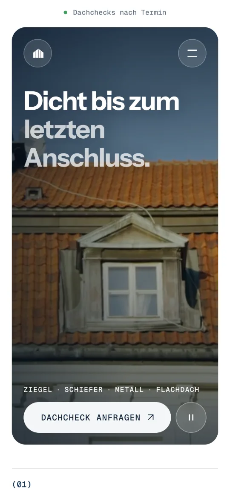

Beispiel · erfundener Betrieb
Website für Dachdecker erstellen lassen: die Beispielseite Firstlinie Dach & Sanierung
Wer einen Dachdecker sucht, will schnell sehen, was der Betrieb kann und wie man anfragt. Wenn Sie als Dachdecker oder Sanierungsbetrieb eine Website erstellen lassen möchten, zeigt diese Beispielseite für einen erfundenen Betrieb, wie Leistungen am Foto erklärt werden und die Anfrage leichtfällt.
Ein Dachdecker erklärt seine Arbeit am Foto: Sechs Markierungen folgen dem Wasser vom First bis zum Fallrohr, ein Schnitt zeigt die Sanierung. Wer unsicher ist, fragt den Dachcheck an.

Welche Aufgabe löst die Seite?
Wer einen Handwerksbetrieb sucht, will schnell sehen, was der Betrieb kann, wie er arbeitet und wie man anfragt. Die Seite erklärt die Arbeit am Bild und macht die Anfrage leicht.
Was enthält die Seite?
- Details am Foto
- Schnitt
- Dachcheck
Wie jede unserer Seiten ist sie zuerst für das Handy gestaltet und lädt schnell.
Für wen passt so eine Seite?
Für Dachdecker, Sanierer und andere Handwerksbetriebe, die ihre Leistungen erklären und Anfragen mit den nötigen Angaben bekommen wollen.
Häufige Fragen zur Website für Dachdecker
Wie zeigt ein Dachdecker auf der Website, dass er verlässlich arbeitet?
Am Bild. Die Beispielseite Firstlinie erklärt die Arbeit mit Fotos und Film und zeigt den Ablauf in klaren Schritten, statt Zuverlässigkeit nur zu behaupten. Ihre echten Baustellenfotos ersetzen die Beispielbilder.
Wie wird erklärt, was ein neues Dach kostet?
Die Seite sagt, wovon der Preis abhängt, und nennt keine erfundene Zahl. Ein Festpreis vor Baubeginn lässt sich als Schritt im Ablauf beschreiben, wenn Sie so arbeiten.
Wie wird der Ablauf eines Dachprojekts sichtbar?
Auch als Reel im Hochformat: Termin vor Ort, Festpreis vor Baubeginn, Abnahme mit Protokoll. Dieses Reel gehört zur Beispielseite und läuft auf der Hauptseite von MAKE Studios.
Welche Leistungen gehören auf die Seite?
Die, nach denen Besucher suchen, als eigene Bereiche in Ihren Worten, zum Beispiel Neueindeckung, Reparatur oder Sanierung. Ihre Liste legen wir im Briefing fest.
Wie schnell kommt man zur Anfrage?
Mit einem Tipp. Die Anfrage ist auf der Beispielseite bewusst leicht gehalten, damit niemand erst suchen muss. Wie sie bei Ihnen ankommt, klären wir im Gespräch.
Wie entsteht Ihre eigene Seite?
In sechs Schritten: Briefing, Design, Feedback, Umsetzung, Abnahme, Live. Sie sehen den Entwurf, bevor wir bauen, und online geht die Seite erst mit Ihrem Okay. Zum Ablauf
Websites gibt es ab 2.990 € netto, einmalig. Alle Preise finden Sie bei MAKE Innovation: Alle Preise. Mehr zu Video und Reels und zu Social Media steht auf der Startseite.
Stand: November 2026